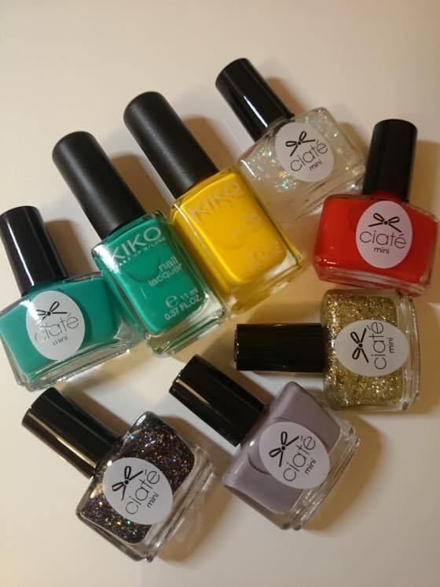
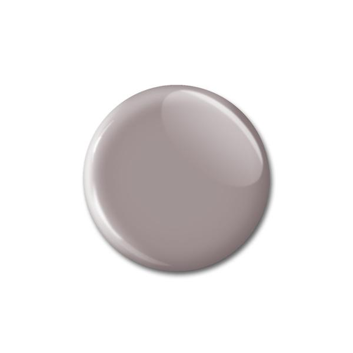
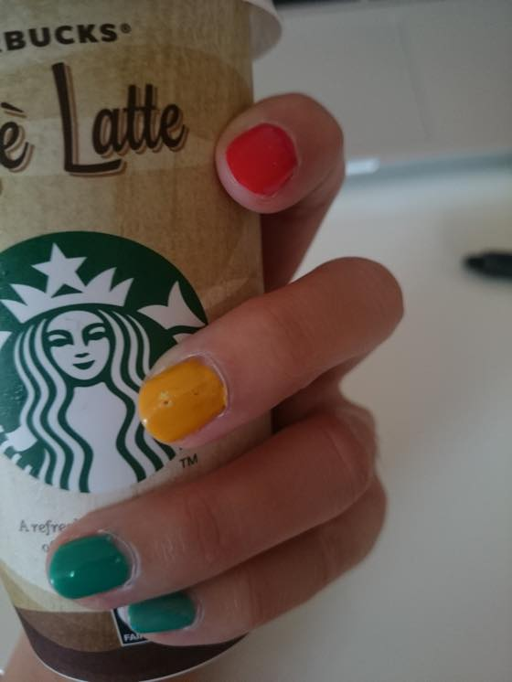
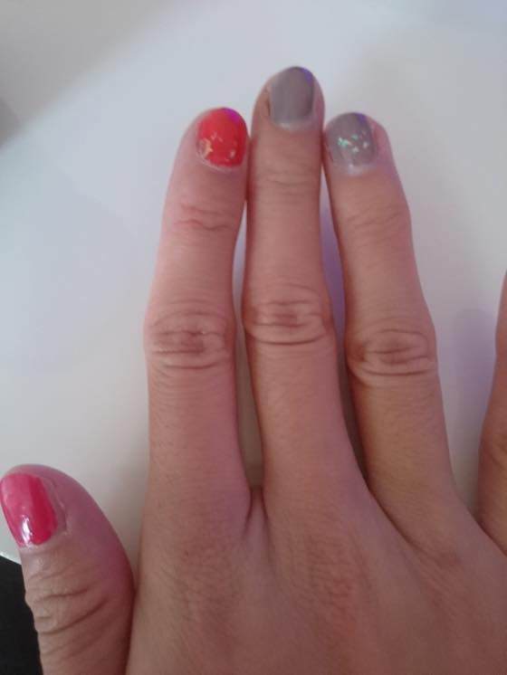

키코네일이 슬금슬금 늘어가고 있습니다;;
엄청 잘 발리고 파워발색 + 비비드한 색감이 늠 좋아요. 진심 깔별로 죄다 사오고 싶습니다 ;ㅂ;
플러스 충동구매한 시아떼(Ciaté) 네일 미니셋
오며가며 자주 본 브랜드인데 우선 용기디자인이 내 취향이 아니라 -_-;; 관심이 없었더랬죠
(뭐든 네모 반듯하거나 원통형이거나 수납할때 열맞춰서 좌라락 세우기 편해야함 ㅋㅋㅋ)
웹사이트 찾아봤더니 영국브랜드 이군욤
주로 OPI나 Nail INC를 구입했었는데 최근 새로 도전해본 두 브랜드 모두 맘에 들어서 기쁩니당 :D
최근 잡지부록으로 PP255 - prima ballerina 색상을 받아서 발라봤는데 발색이 늠 잘되어서 깜놀

성격이 급한것도 있고 이런 톤다운 & 여리여리한 색 네일 정말 못바르고 안어울리는데
이건 늠 맘에들어요 +_+

키코 노랑 + 초록 네일
노랑 / 초록 계열도 구입해서 성공해 본적이 없는데 만쉐!!
바르면서 우헤헤~발색 짱이다 이러믄서 혼자 좋아라했습니다 ^^;;

시아떼 네일 미니셋에서는 요 빨강이 제일 마음에 듭니다.
굉장히 말갛고 선명하게 발색되요 +_+
빨강 PPM016 - mistress / 회색 PP255 - prima ballerina 바르고 위에 반짝이 PPM146 - snow globe 올려준것 :3
한동안 잠잠하다가 또다시 네일에 불타오르고 있습니다
이것도 주기가 있나봐여 ^^**